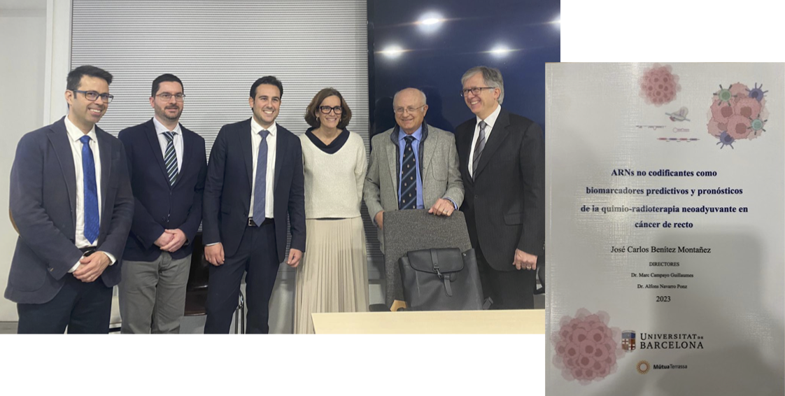

üì¢ News
04/04/2025 - We are finalists in the *IDIBAPS 2025 Scientific Photography Competition* with this picture of Melissa Acosta:
Go to the news on the IDIBAPS page
here
17/03/2025 - On Monday, March 17th, our PI, Dr. Alfons Navarro, participated in the competition for the position of *Full Professor*...
The people in the photo are (from right to left): Dr. J.A. Marchal, Dr. J.J. Rodríguez Peralto...
More info
here
14/03/2024 - Thesis defense of Melissa Acosta Plasencia.

The people in the photo are: (from right to left)... Dr. Alfons Navarro.
08/07/2024 - Published in *Translational Cancer Research* and interview with Dr. Alfons Navarro.

See the complete interview
here
14/03/2024 - Thesis defense of José Carlos Benítez Montañez.

The people in the photo are: (from right to left)... Dr. Alfons Navarro.
14/03/2024 - Finally we have date for the thesis defense of José Carlos Benitez...